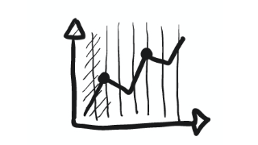

-

Explorez vos opportunités avec les Jobs
Dans cet article, je vous partage trois axes d'exploration pour trouver des opportunités et alimenter votre continuous discovery. Comment peut on se servir du Job 2 Be Done ? Quelles pratiques de Lean peuvent nous aider ? -
Tips pour vos interviews utilisateurs
Une poignée de tips issus de mon expérience pour se faciliter la vie quand on fait du continuous discovery. A qui parler ? Quelles questions leur poser ? Comment diffuser nos découvertes ? -
Deux outils d'UX pour le Product Owner et le Product Manager
Comment s'assurer que nos écrans sont bien pensés ? Et pourquoi il faut un UX à plein temps ? -
Ne mettez pas vos spécifications dans Jira
Comment faire sa documentation facilement ? Et quel est le rapport avec Jira ? -
Cas pratique : exemple d'atelier de découpe d'user stories
Un exemple d'application de l'atelier de découpe de la fonctionnalité de vente en ligne de snack pour les cinémas -
Pratiques pour bien découper des user stories
Bien découper ses user stories c'est plus important que vous ne le pensez. Comment trouver plus facilement des axes de découpes ? Comment s'appuyer sur le reste de l'équipe pour réussir cet exercice ?